Version A · Outside · 11 × 8.5 in · flap | back cover | front cover

“All these are skilled with their hands… Without them no city could be lived in. Yet they maintain the fabric of the world.”
Rooted in St. Joseph. Built for the trades.
A Catholic brotherhood of skilled tradesmen in greater St. Louis, based at the historic St. Mary of Victories.
Web sjwg.org
Email hello@sjwg.org
Phone (636) 288-7002
Church 744 S Third St, St. Louis, MO 63102
Email hello@sjwg.org
Phone (636) 288-7002
Church 744 S Third St, St. Louis, MO 63102
sjwg.org
Directory, membership, events, giving.
St. Joseph the Worker Guild • A Catholic brotherhood of tradesmen
Join a brotherhood of Catholic tradesmen.
Hire a Catholic tradesman.
Local tradesmen • Faith • Mutual support